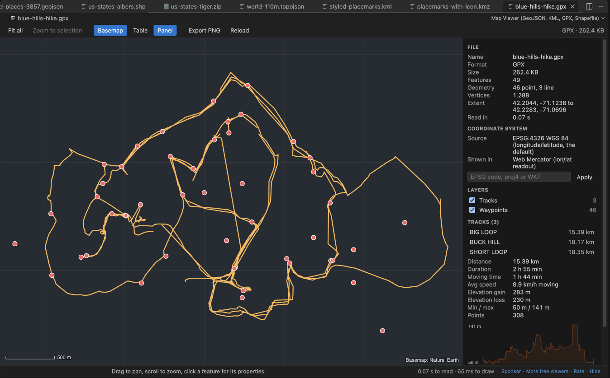

Open files in VS Code and Cursor / Science data
See the distance and elevation gain of a GPX file
Click a .gpx file and GeoJSON, KML & GPX Viewer draws it on an offline map in VS Code. The side panel lists every track and route with its distance. Click one to see the duration, moving time, average speed, elevation gain and loss, lowest and highest point and an elevation profile. The map and the stats are free. Zovo Pro (USD 19 once) adds Measure table, a CSV with the length of every track, with 3 free tries.
Free, MIT license. Extension ID zovo.zovo-geo-map-viewer, version 0.2.2. Needs VS Code 1.90.0 or newer.
Also free from Zovo: TIFF Viewer & TIF Viewer, VS Code Marketplace · Open VSX (Cursor, Windsurf).

Steps in VS Code
- Install GeoJSON, KML & GPX Viewer from the Marketplace, or press Ctrl+P (Cmd+P on macOS) and run
ext install zovo.zovo-geo-map-viewer. - Click the
.gpxfile in the Explorer. It opens on the map. If it does not, right-click it and pick Open in Map Viewer. - Open the side panel with Panel or P. Layers shows the tracks, routes and waypoints with their counts, and the track list shows the distance of each line.
- Click a track name. The panel shows its distance, duration, moving time (above 1 km/h), average moving speed, elevation gain and loss, lowest and highest point, the number of points and the elevation profile.
- Press T for the table of features, and click a row to zoom to it. Click a waypoint on the map to see its name and properties.
- Click Export PNG to save the map view, for example to send the route to the people you hike with.
Where Zovo Pro saves time
Every format, the map, the attribute table, filters, the GPX stats, reprojection and PNG export are free. The basemap ships with the extension, so nothing is fetched from the internet and your track stays on your computer.
Measure table saves a CSV with one row per feature. Each track or route gets its length in km, measured on the globe, and every feature gets its center and bounding box, waypoints included. It is handy to compare the routes in one file, or to keep a list of your tracks in a spreadsheet. The other Pro tools are Convert to GeoJSON, KML or CSV, and Batch convert a folder to GeoJSON.
With Measure table (Zovo Pro)
- Right-click the
.gpxfile in the Explorer and pick "Zovo Pro: Measure table", or run "Map Viewer: Measure table: area, length and center of every feature (Zovo Pro)" from the Command Palette. - Pick a place for the CSV file and open it in a spreadsheet.
- A try counts only when the tool saved its file, and each Pro tool has 3 free tries.
Measure table works 3 times on your computer before it asks for a license, and a try counts only when you get a result. Opening a file shows no popup and no countdown.
Zovo Pro costs USD 19 once. It is not a subscription, and it turns on the Pro tools in every Zovo extension, not only GeoJSON, KML & GPX Viewer. After a card payment (Stripe) your license key shows on the next page. In VS Code, run "Zovo Pro: Enter Zovo Pro license key" from the Command Palette and paste it. The key is checked on your computer, with no network call. With GitHub Sponsors, pick the "$19 one time" tier, then run "Zovo Pro: I already paid: unlock with GitHub Sponsors" and sign in with the same GitHub account. With PayPal, send USD 19 with "Zovo Pro" in the note and the key comes by email within a day.
A team of 5: USD 59 once, by card or by PayPal. Every rule and every Pro tool is on the Zovo Pro page.
Steps in Cursor, Windsurf or VSCodium
- Open the Extensions view with Ctrl+Shift+X (Cmd+Shift+X on macOS).
- Search for
zovo.zovo-geo-map-viewerand click Install. Cursor, Windsurf and VSCodium install from Open VSX, where it is published aszovo/zovo-geo-map-viewer. - If your editor has no gallery, download the .vsix from the Open VSX page and run "Extensions: Install from VSIX...".
- Then use it the same way as in VS Code.
What GeoJSON, KML & GPX Viewer handles
- GPX tracks, routes and waypoints, with track names.
- KML, KMZ, GeoJSON, shapefiles, TopoJSON, WKT and CSV with latitude and longitude, on the same map.
- Duration and moving time from the time stamps in the file.
- Files up to 512 MB (setting
geoMapViewer.maxFileMB).
What it does not do
- The offline basemap shows countries and lakes only. There are no streets, trails, satellite images or terrain.
- Elevation gain adds every rise between points in the file with no smoothing, so noisy GPS heights give a higher number than apps that smooth them.
- A route without time stamps or heights shows a dash for duration and elevation.
- Track stats are shown for files with up to 200 lines, and the elevation profile for the first 50.
Other options
- GPXSee. Free, open source desktop viewer for GPX files, with track stats, an elevation graph and online maps.
- gpxpy. Free Python library to read GPX files and compute length, duration and uphill and downhill in a script.
Install counts and Open VSX status were checked on 13 November 2026. Descriptions in quotes are the extensions' own.
Questions
Why is the elevation gain higher than in my fitness app?
The viewer adds every rise in the heights stored in the file. Many apps smooth the heights or replace them with terrain data, which gives a lower total.
Can I see what the trail crosses, like roads or land?
No. The basemap has countries and lakes only. Use a map app with trail or satellite layers for that.
Is my GPX file uploaded?
No. The webview allows no remote address, and the basemap is a file inside the extension.
Does it work in Cursor or Windsurf?
Yes. Cursor, Windsurf and VSCodium install extensions from Open VSX. Search for the extension in their Extensions view and install it there.
More about GeoJSON, KML & GPX Viewer
Read the GeoJSON, KML & GPX Viewer page for every feature and setting, or the source code on GitHub.
Related guides
- TIFF Viewer & TIF Viewer on the VS Code Marketplace (also on Open VSX). Opens TIFF and GeoTIFF images, 16-bit included, in VS Code.
- Shapefile to GeoJSON in VS Code
- A free NetCDF viewer that runs in VS Code
- Open an HDF5 (.h5) file in VS Code
- Compare two NetCDF files
Support this work
If this extension saves you time, you can support the work on GitHub Sponsors. Monthly tiers start at $5, and one-time tiers start at $15. Sponsorship is optional, and the tool works the same without it.
Need your format supported?
Open a format request with a sample file, and I reply there whether it can be done. For USD 299 once, through this GitHub Sponsors tier, I add your file format or a missing feature to this extension, with tests, within 7 days.